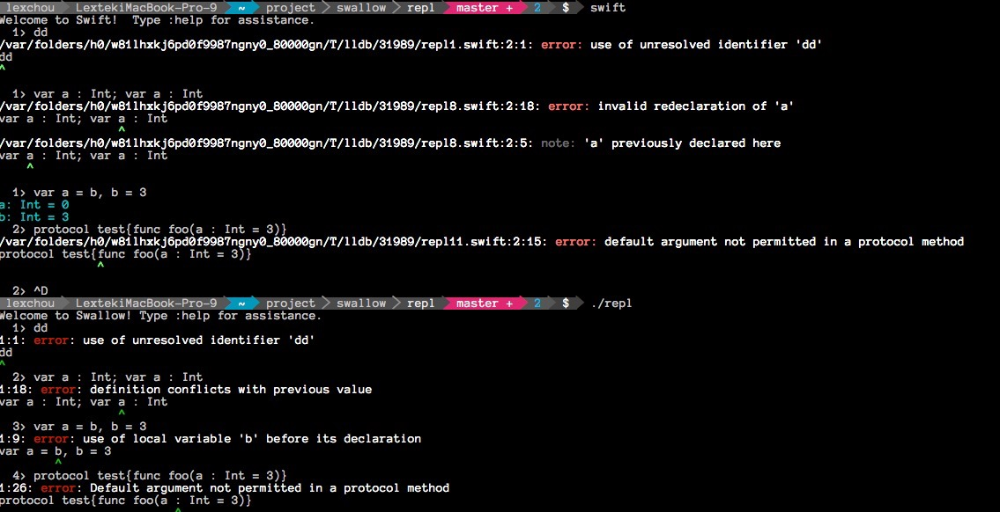
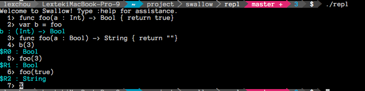

Swallow
Introduction & Disclaimer
Swallow is an open-sourced implementation of swift compiler, but the current version is only a 'pre-pre-alpha' version which is still undergoing heavy development and testing before its official release, and I can only develop this within my spare time.
I don't garantee the development progress since I need to take care of my pregnant wife and have my own full-time job.
The current version only implemented a rough REPL that even has no code generation, you can see what it can do from the REPL, only some syntax checking and see the result of symbol's type inference.
The grammar used by the parser based on the earliest official document(released in Jun 2th, 2014), so the syntax sugars after that are not supported, the grammar changes are minor enough so I plan to lower down its priority and mainly work on semantic analysis.
The current version in semantic analysis can handle function's overloading, operator customization and overloading, customized types(type alias/class/struct/protocol), geneirc and constraint, type inference, variable/constant declaration(including tuple) etcs, it still cannot handle control flow, extension, pattern matching, they'll be done in the following days.
The code generation will be based on LLVM, then we can make use of LLVM's toolchain to build a full ecosystem.
The test cases are used heavily to cover all code, but still got some situations are not well handled, those code that can crash the REPL will be added as test cases sequentially, the codes in swift-compiler-crashes will eventually merged to test case when the compiler is stable enough.
If you want to see the code, you will find I used some simple hacking trick to handle built-in types(e.g. Builtin.Word), this incorrect approach will be fixed when the compiler can support a complete standard library.
介绍与免责声明
Swallow 是一个开源的swift编译器实现，不过目前还没完工，只能当做一个体验版，好多东西都还需要大量的时间去开发，我只能在业余的时间去开发，加之要照顾怀孕的妻子以及有自身的全职工作，因此我不能保证开发进度能很快。
现在连代码生成都还没来得及弄，现在的版本只提供了一个粗糙仿制的REPL，可以看到现在的进展情况。暂时自带的REPL只能查看一些语法和语义错误，以及查看符号的类型推导的结果。
目前语法分析参考的是官方文档最早的版本（2014年6月2号发布的版本），因此好多新语法尚不被支持，后来几次的版本，语法改动相对较小，所以我现在的开发重心一直放在语义分析这块，等做得差不多了，我再来回过头增加新的语法糖支持。
语义分析这块目前的版本能处理函数重载，操作符重载，自定义操作符，类型定义（class/struct/protocol），泛型，泛型约束，类型推导以及变量声明（包括以元组的方式）等，目前的版本还没有处理控制流，extension，模式匹配等，这些将在接下来的日子里陆续完工。
代码生成这块打算使用LLVM来完成，这样方便利用LLVM的工具链来提供完整的生态系统。
编译器代码本身尽量用测试用例覆盖，但是在做REPL的时候发现好多情况都没考虑到，那些会引起REPL崩溃的代码 将会陆续放入到测试用例中的，后期也打算将swift-compiler-crashes的代码也集成到测试用例中去。
需要注意的是目前的版本为了方便用单元测试，内建类型（比如Builtin.Word）在语法分析里做了简单的hack来处理，这个错误的做法将在整个编译器能完整的支持标准库的时候再进行修正。
Build instructions
Clone this repository to your drive:
$ git clone https://github.com/lexchou/swallow/
Build google-test:
$ cd swallow/gtest-1.7.0/
$ ./configure
$ cmake -G 'Unix Makefiles' .
$ make
Build the swallow/repl/test cases:
$ cd ..
$ cmake .
$ make
Start repl:
$ repl/repl
构建过程
先将项目克隆到本地：
$ git clone https://github.com/lexchou/swallow/
然后编译： google-test:
$ cd swallow/gtest-1.7.0/
$ ./configure
$ cmake -G 'Unix Makefiles' .
$ make
然后编译 swallow/repl/test cases:
$ cd ..
$ cmake .
$ make
执行 repl:
$ repl/repl
Snapshots
Comparison between official REPL and swallow

Type inference

Function overloads

License
Copyright (c) 2014, Lex Chou <lex at chou dot it>
All rights reserved.
Redistribution and use in source and binary forms, with or without
modification, are permitted provided that the following conditions are met:
* Redistributions of source code must retain the above copyright
notice, this list of conditions and the following disclaimer.
* Redistributions in binary form must reproduce the above copyright
notice, this list of conditions and the following disclaimer in the
documentation and/or other materials provided with the distribution.
* Neither the name of Swallow nor the names of its contributors may be
used to endorse or promote products derived from this software without
specific prior written permission.
THIS SOFTWARE IS PROVIDED BY THE REGENTS AND CONTRIBUTORS "AS IS" AND ANY
EXPRESS OR IMPLIED WARRANTIES, INCLUDING, BUT NOT LIMITED TO, THE IMPLIED
WARRANTIES OF MERCHANTABILITY AND FITNESS FOR A PARTICULAR PURPOSE ARE
DISCLAIMED. IN NO EVENT SHALL THE REGENTS AND CONTRIBUTORS BE LIABLE FOR ANY
DIRECT, INDIRECT, INCIDENTAL, SPECIAL, EXEMPLARY, OR CONSEQUENTIAL DAMAGES
(INCLUDING, BUT NOT LIMITED TO, PROCUREMENT OF SUBSTITUTE GOODS OR SERVICES;
LOSS OF USE, DATA, OR PROFITS; OR BUSINESS INTERRUPTION) HOWEVER CAUSED AND
ON ANY THEORY OF LIABILITY, WHETHER IN CONTRACT, STRICT LIABILITY, OR TORT
(INCLUDING NEGLIGENCE OR OTHERWISE) ARISING IN ANY WAY OUT OF THE USE OF THIS
SOFTWARE, EVEN IF ADVISED OF THE POSSIBILITY OF SUCH DAMAGE.
授权许可
Copyright (c) 2014, Lex Chou <lex at chou dot it>
这份授权条款，在使用者符合以下三条件的情形下，授予使用者使用及再散播本
软件包装原始码及二进位可执行形式的权利，无论此包装是否经改作皆然：
* 对于本软件源代码的再散播，必须保留上述的版权宣告、此三条件表列，以
及下述的免责声明。
* 对于本套件二进位可执行形式的再散播，必须连带以文件以及／或者其他附
于散播包装中的媒介方式，重制上述之版权宣告、此三条件表列，以及下述
的免责声明。
* 未获事前取得书面许可，不得使用Swallow或本软件贡献者之名称，
来为本软件之衍生物做任何表示支持、认可或推广、促销之行为。
免责声明：本软件是由Swallow及本软件之贡献者以现状（"as is"）提供，
本软件包装不负任何明示或默示之担保责任，包括但不限于就适售性以及特定目
的的适用性为默示性担保。Swallow及本软件之贡献者，无论任何条件、
无论成因或任何责任主义、无论此责任为因合约关系、无过失责任主义或因非违
约之侵权（包括过失或其他原因等）而起，对于任何因使用本软件包装所产生的
任何直接性、间接性、偶发性、特殊性、惩罚性或任何结果的损害（包括但不限
于替代商品或劳务之购用、使用损失、资料损失、利益损失、业务中断等等），
不负任何责任，即在该种使用已获事前告知可能会造成此类损害的情形下亦然。